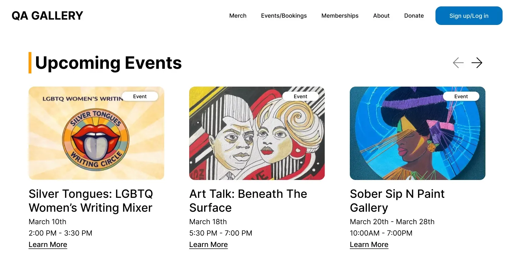
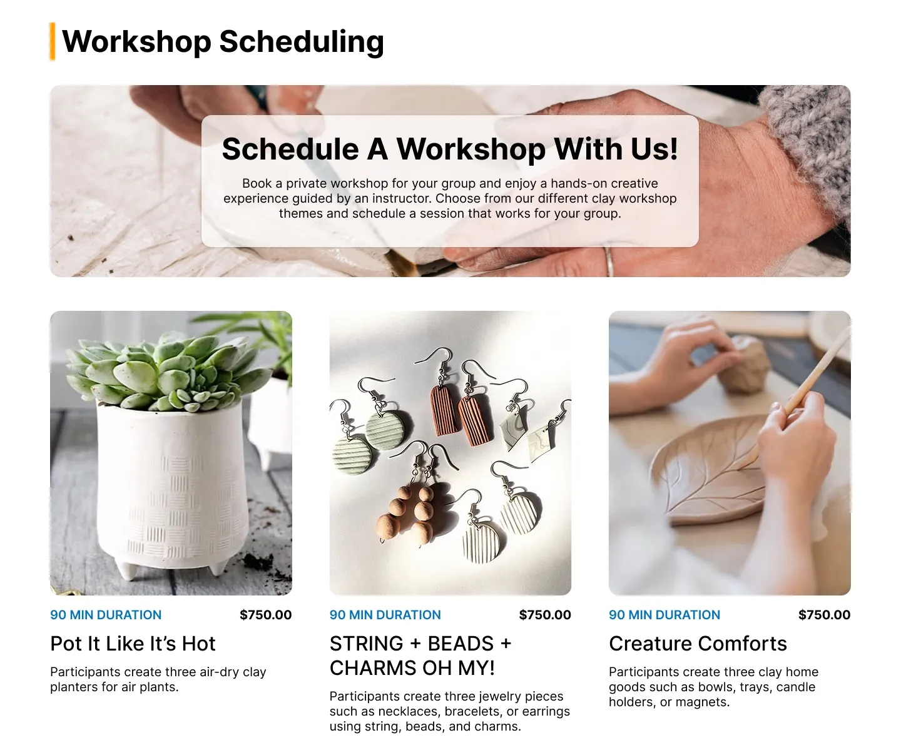
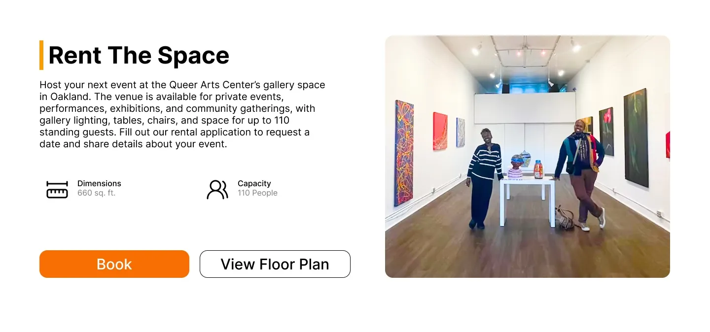

PRODUCT DESIGN · CLIENT
Making a gallery's events easy to find and book
QA Gallery shows LGBTQ+ artists in Oakland. My first client project, where I designed the events and booking experience, from the navigation down to the pages people actually land on.

Upcoming Events after the redesign: one card carries the date, the tags and the next step.
A real client, a real deadline
QA Gallery runs exhibitions, workshops and a rentable space. The site had the art but buried it: a nine-item nav and event details scattered across cluttered pages. A PM and four designers split the rebuild; I took the part people come to the site to do.
- My pagesEvents, event detail, workshops, Rent The Space.
- My callCut the nav and give booking its own home.
- The team'sRebrand, membership tiers, online shop.
Everyone in this space makes the same mistake
A client interview set the priorities. A competitive scan of other galleries showed the same two weaknesses everywhere: visual clutter and weak calls to action. That gap was the opening.
How might we help people discover events, engage with the gallery, and support it, without getting lost?
The question we designed against
Pick the workshop, then the date
Our first flow asked people to choose a date before they knew what they were signing up for. Testing made the fix obvious: understand the workshop first, commit second.
Date, then workshop
Calendar first. People were asked to commit to a slot before they knew what it was for.
Workshop, then date
Browse, read what you will make, then pick a time. A small reorder, a much calmer decision.

Workshops lead with price, duration and what you will make, behind one booking button.
Every page leads with the detail you need to commit
Same rule on all four: the practical facts up top, the story underneath, one obvious action.

Delivered on time, through a client gap
It finally feels like us. The art comes first, and everyone can find their way around.
QA Gallery stakeholder
- What shipped. A trimmed nav, three focused pages and a booking flow that matches how people decide.
- What is next. Confirm membership tiers and store inventory, another round of usability testing, and finish the migration onto Wix.
Holding user needs and business goals at once
My first client project taught me to carry both, and to decide which wins when they pull apart. Communication gaps and a family emergency on the client side meant we moved on our own judgment and still delivered on time.